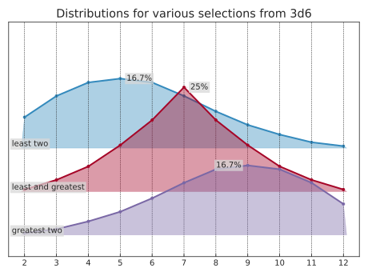

Core concepts
dyce provides two core primitives for basic finite discrete probability computations.
H objects represent finite discrete probability distributions as histograms.
They map outcomes to integer counts.
Each positive outcome’s probability is its count by the histogram’s total count.
Outcomes with zero counts have probabilities of zero.
P objects represent pools (sorted sequences) of histograms.
If all you need is aggregate outcomes (sums) from rolling a bunch of dice, H objects are probably sufficient.
If you need to narrow outcomes prior to computing aggregates (e.g., taking the highest and lowest of each possible roll of \(n\) dice), that’s where P objects come in.
As a wise person whose name has been lost to history once said: “Language is imperfect. If at all possible, shut up and point.” So with that illuminating (or perhaps impenetrable) introduction out of the way, let’s dive into some examples!
Basic examples
Histograms
H(n) is shorthand for explicitly enumerating outcomes \([{ {1} .. {n} }]\), each with a frequency of 1.
A fair, six-sided die (d6) can be modeled as:
1 2 3 | |
Tuples with repeating outcomes are accumulated. A six-sided “2, 3, 3, 4, 4, 5” die can be modeled as:
1 2 | |
A fudge die can be modeled as:
1 2 | |
Python’s matrix multiplication operator (@) is used to express the number of a particular die (roughly equivalent to the “d” operator in common notations).
The outcomes of rolling and summing two six-sided dice (2d6) are:
1 2 | |
That shows one way to make 2, two ways to make 3, three ways to make 4, etc.
dyce.d has some convenient abbreviations for commonly found dice:
1 2 3 4 5 | |
Pools
A pool of two six-sided dice is:
1 2 3 | |
Where n is an integer, P(n, ...) is shorthand for P(H(n), ...).
Python’s matrix multiplication operator (@) can also be used with pools.
The above can be expressed more succinctly.
1 2 3 | |
When compared with a histogram, a pool is treated as the distribution of its summed outcomes. We can validate that a pool representing a pair of Sicherman dice is equivalent to a histogram representing 2d6.
1 2 3 | |
Sicherman dice … are a pair of 6-sided dice with non-standard numbers—one with the sides 1, 2, 2, 3, 3, 4 and the other with the sides 1, 3, 4, 5, 6, 8. They are notable as the only pair of 6-sided dice that are not [standard 6-sided] dice, bear only positive integers, and have the same probability distribution for [their] sum as [two standard 6-sided] dice.
Arithmetic and formatting
Both histograms and pools support arithmetic operations.
3×(2d6+4) is:
1 2 | |
A pool can be “flattened” to a histogram via its P.h method.
1 2 | |
Arithmetic operations implicitly flatten pools into histograms.
1 2 | |
Histograms provide rudimentary text formatting for convenience.
1 2 3 4 5 6 7 8 9 10 11 12 13 14 15 16 | |
Outcome selection
Histograms should be sufficient for most calculations.
Pools are useful for “keeping” or “taking” (selecting) some of each roll’s outcomes.
P.at sums the selected outcomes into a histogram.
P.rolls_with_counts yields the selected rolls and their counts.
Outcomes in rolls are ordered from least to greatest.
Provide one or more integers, slices, or a mix thereof to those methods to select outcomes by their ordered positions.
Taking the least two, least and greatest, or greatest two faces when rolling three six-sided dice (3d6):
1 2 3 4 5 6 7 8 9 10 11 12 13 14 15 | |
1 2 3 4 5 6 7 8 9 10 11 12 13 14 | |
1 2 3 4 5 6 7 8 9 10 11 12 13 14 | |
Mind your parentheses
Parentheses are often needed when constructing a pool and making selections in the same expression.
This is because @ has a lower precedence than other operators like ..
1 2 3 4 5 6 | |
Pools are immutable, ordered sequences. Like histograms are grouped, and groups are sorted. Slicing creates a new pool with the selected histograms.
1 2 | |
A pool’s histogram order is distinct from its rolls’ order
Histograms are sorted in a pool.
1 2 | |
Rolls are sorted least-to-greatest, irrespective of the histogram’s position in the pool from which each outcome came.
1 2 3 4 | |
Indexes used in roll selection, such as with P.at and P.rolls_with_counts, reference positions in sorted rolls.
1 2 | |
Comparisons and counting
Outcome comparisons produces a histogram with False and True outcomes.
Because ==, !=, <, etc. compare whole histograms, H provides H.eq, H.ne, H.lt, etc. for comparing outcomes.
1 2 3 4 5 6 | |
False and True behave as zero and one in arithmetic.
These allow us to take advantage of a counting trick.
Summing \(n\) of these histograms tells us how many of the \(n\) original dice meet the condition.
Calculating the probability that all of 3d6’s outcomes are even:
1 2 3 4 5 6 7 8 9 10 | |
Visualization
H.probability_items yields outcome and probability pairs for use with plotting packages.
If Matplotlib is installed, dyce.viz.matplotlib provides functions for plotting histograms.
dyce.viz.plotly provides figure specifications for use with Plotly.
dyceum provides additional interactive visualization tools.
Visualization source code
1 2 3 4 5 6 7 8 9 10 | |

Visualization source code
1 2 3 4 5 6 7 8 9 10 11 12 13 14 15 16 17 18 | |
Further exploration
See the examples for worked calculations, or consult the API reference.